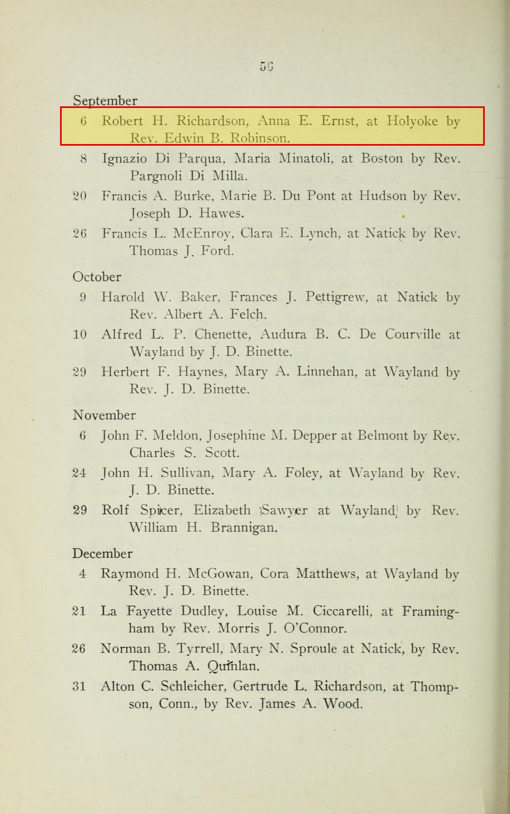
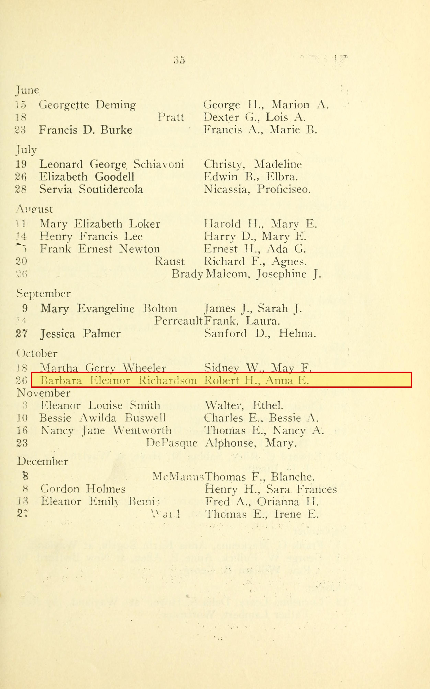

Richardson and Ernst
The Richardsons
Dorothy R. (Richardson) Crosby was a daughter of Robert H. Richardson and Anna E. "Anne" (Ernst) Richardson. The marriage is a town register. Dorothy's own birth record has not been seen, so her parent link is probable. Her sister Barbara's birth register names the same parents.
The 1920 marriage
Robert H. Richardson and Anna E. Ernst married at Holyoke, Massachusetts, on September 6, 1920. The Rev. Edwin B. Robinson officiated. The marriage was registered in Wayland, where the couple lived. Their own parents have not been identified.
A son, Robert, called Bob, completed the family. Dorothy's obituary says her brother Robert Richardson died before her. He is not profiled, and no dates are given for him here.

Barbara and Dorothy
Barbara Eleanor Richardson was born on October 26, 1921, in Cochituate, a village of Wayland. The printed register says October 26. An old computer reading of the same page said the 20th. The page itself, and Barbara's obituary, say the 26th. That disagreement is closed.
The family later moved to Chicopee, where Dorothy was born on October 24, 1928. Dorothy married Roy E. Crosby. Their life in West Springfield is on the Crosby page. She died in February 2022.
Barbara married Roland Vogel, lived for many years in Chicopee, and worked as an insurance agent. She died on November 24, 2016, and was buried at the Massachusetts Veterans Memorial Cemetery in Agawam. Her obituary names her sister Dorothy "Ducky" Crosby. Her children are not named here. The obituary scan is not in this site. Read the obituary.
